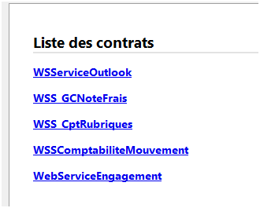
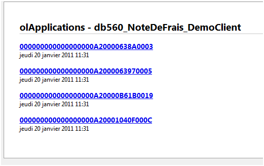
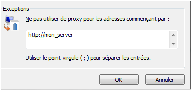
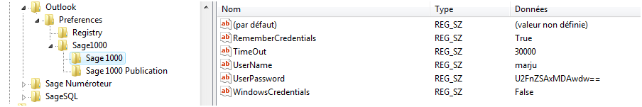
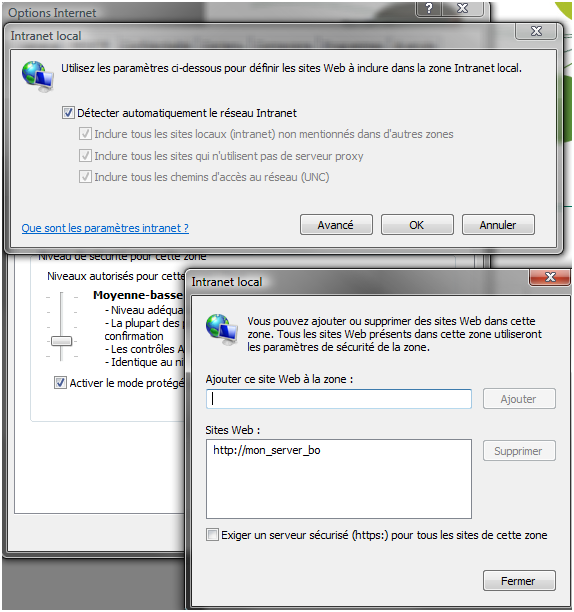
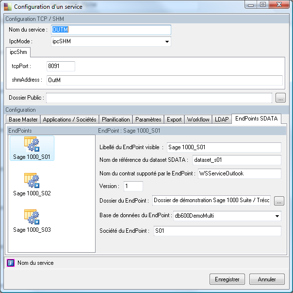
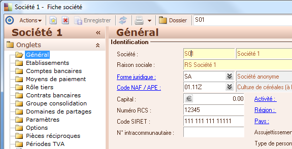
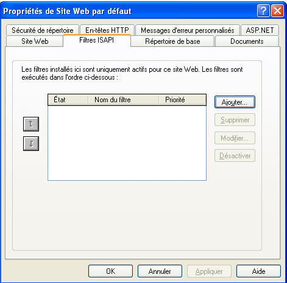
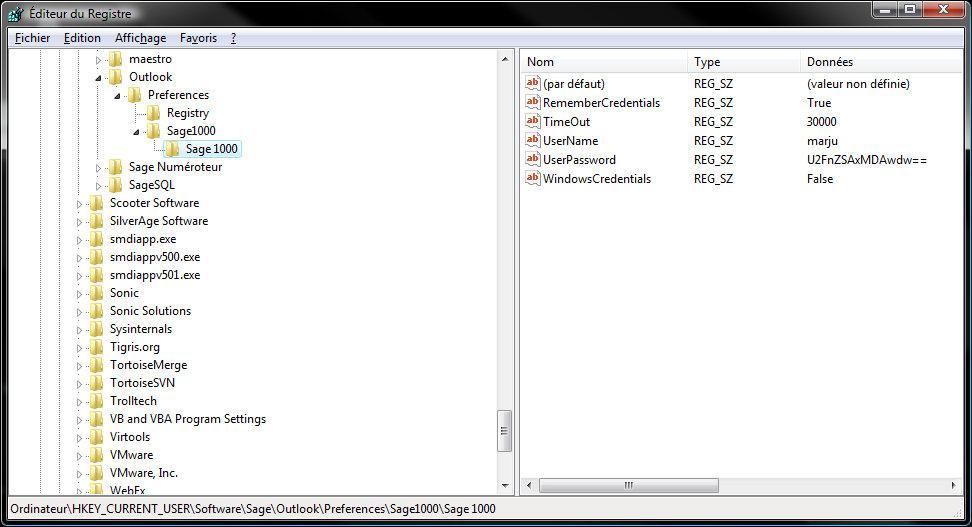
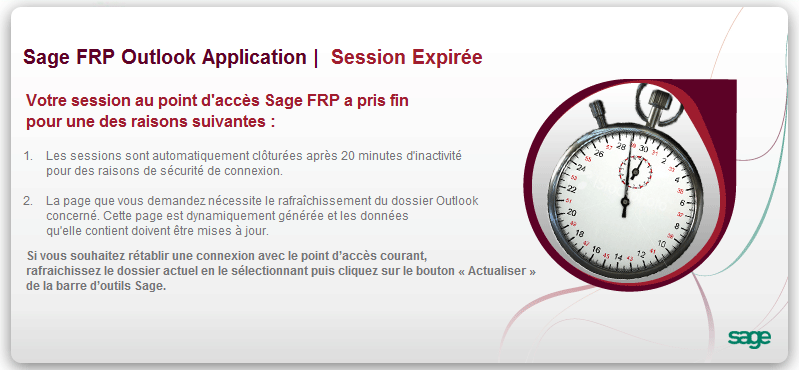

FAQ (outlook)
Y-a-t-il un fichier de log, de traces et où se trouve-t-il ?
Oui, il existe un fichier de trace créé à chaque démarrage de l'addin Outlook.
Il se trouve à ces emplacements :
• Pour Vista / seven : dans le répertoire des données de l'utilisateur : exemple : C:\Users\marju\AppData\Local\Sage\SageAddinOutlook\Logs\ • Pour XP : dans le répertoire des données de l'utilisateur : exemple : C:\local settings\marju\AppData\Local\Sage\SageAddinOutlook\Logs\
Ce fichier de log contient des informations de trace permettant d'identifier le contexte d'exécution de l'addin mais aussi un ensemble de traces de debug plus ou moins détaillées suivant le mode défini.
Exemple de sortie dans ce fichier :
Trace Information Starting
2011-05-05-16-09-10 : stInfo : date format : 05/05/2011
2011-05-05-16-09-10 : stInfo : currency format : 12 345,67 €
2011-05-05-16-09-10 : stInfo : CurrentUserDomain: SAGEFR
2011-05-05-16-09-10 : stInfo : CurrentUserName: marju
2011-05-05-16-09-10 : stInfo : Office version: 14
2011-05-05-16-09-10 : stInfo : Machine Name: MARJU
2011-05-05-16-09-10 : stInfo : Operating System: Microsoft Windows NT 6.0.6002 Service Pack 2
2011-05-05-16-09-10 : stInfo : Operating System ID: Win32NT
2011-05-05-16-09-10 : stInfo : Service Pack: Service Pack 2
2011-05-05-16-09-10 : stInfo : Current Folder: c:\Program Files\Microsoft Office\Office14
2011-05-05-16-09-10 : stInfo : CLR Version: 4.0.30319.225
2011-05-05-16-09-10 : stInfo : Present Drives: C:\, D:\, E:\, F:\, G:\, H:\, I:\, J:\, K:\, M:\, Q:\, R:\, S:\, T:\
2011-05-05-16-09-10 : stInfo : Program Files: C:\Program Files
2011-05-05-16-09-10 : stInfo : Common Program Files: C:\Program Files\Common Files
2011-05-05-16-09-10 : stInfo : Windows Desktop: C:\Users\marju\Desktop
2011-05-05-16-09-10 : stInfo : Favorites: C:\Users\marju\Favorites
2011-05-05-16-09-10 : stInfo : History: C:\Users\marju\AppData\Local\Microsoft\Windows\History
2011-05-05-16-09-10 : stInfo : Personal (My Documents: D:\Mes documents
2011-05-05-16-09-10 : stInfo : Start Menu's Program: C:\Users\marju\AppData\Roaming\Microsoft\Windows\Start Menu\Programs
2011-05-05-16-09-10 : stInfo : Recent: C:\Users\marju\AppData\Roaming\Microsoft\Windows\Recent
2011-05-05-16-09-10 : stInfo : Send To: C:\Users\marju\AppData\Roaming\Microsoft\Windows\SendTo
2011-05-05-16-09-10 : stInfo : Start Menu: C:\Users\marju\AppData\Roaming\Microsoft\Windows\Start Menu
2011-05-05-16-09-10 : stInfo : Startup: C:\Users\marju\AppData\Roaming\Microsoft\Windows\Start Menu\Programs\Startup
2011-05-05-16-09-10 : stInfo : Windows System: C:\Windows\system32
2011-05-05-16-09-10 : stInfo : Application Data: C:\Users\marju\AppData\Roaming
2011-05-05-16-09-10 : stInfo : Common Application: C:\ProgramData
2011-05-05-16-09-10 : stInfo : Local Application Data: C:\Users\marju\AppData\Local
2011-05-05-16-09-10 : stInfo : Cookies: C:\Users\marju\AppData\Roaming\Microsoft\Windows\Cookies
2011-05-05-16-09-10 : stInfo : Processors count: 2
2011-05-05-16-09-10 : stInfo : --------------------------
The following challenge was raised by the server : Basic realm="Sage"
The following challenge was raised by the server : Basic realm="Sage"
The following challenge was raised by the server : Basic realm="Sage"
2011-05-05-16-14-13 : stCatchError : Sage.SData.Client : error : Le délai d'attente de l'opération a expiré.
------------
Lors de l'analyse de problème, il est possible de spécifier un niveau de debug plus avancé en modifiant la clé de registre suivante :
HKEY_CURRENT_USER\Software\Sage\Outlook\Preferences\Registry
Et d'y ajouter une valeur chaîne 'DebugMode" avec comme valeur "True".
Cela permet d'avoir un fichier de log plus verbeux :
2011-10-03-10-21-31 : stInfo : Common Application: C:\ProgramData
2011-10-03-10-21-31 : stInfo : Local Application Data: C:\Users\marju\AppData\Local
2011-10-03-10-21-31 : stInfo : Cookies: C:\Users\marju\AppData\Roaming\Microsoft\Windows\Cookies
2011-10-03-10-21-31 : stInfo : Processors count: 2
2011-10-03-10-21-31 : stInfo : --------------------------
2011-10-03-10-21-32 : stDebug : Try to retreive EndPoints from url : http://marju/suite_620/server/sdata/$system/registry/endpoints?where=contractName eq 'WSServiceOutlook'
2011-10-03-10-21-41 : stDebug : Find EndPoint for Tree from Registry SData : Sage FRP Treasury, Protocol : http, ServerName marju:80, ServerPart2 : /treso_620/server, VirtualDirectory : /treso_620/server/sdata, ApplicationName : treso_620, ContractName : WSServiceOutlook, Dataset : dataset-work-treso
2011-10-03-10-21-41 : stDebug : Find EndPoint for Tree from Registry SData : Sage FRP Treasury Publication, Protocol : http, ServerName marju:80, ServerPart2 : /treso_620/server, VirtualDirectory : /treso_620/server/sdata, ApplicationName : treso_620, ContractName : WSServiceOutlook, Dataset : dataset-master-pub
2011-10-03-10-21-41 : stDebug : Find EndPoint for Tree from Registry SData : Sage 1000 620, Protocol : http, ServerName marju:80, ServerPart2 : /suite_620/server, VirtualDirectory : /suite_620/server/sdata, ApplicationName : suite_620, ContractName : WSServiceOutlook, Dataset : dataset_suite_620
Comment puis-je valider que mon accès SDATA fonctionne et que mes points d'accès Outlook sont corrects ?
En exécutant des urls dans un browser quelconque et qui renverront un certain nombre d’informations :
Liste des contrats:
http://host/service/server/sdata/l1000/
Renvoie la liste des contrats supportés par le point d’accès, le contrat « Outlook » doit apparaitre dans la liste :

Liste des points d'accès Outlook:
http://host/service/server/sdata/$system/registry/endpoints?where=contractName%20eq%20%27WSServiceOutlook%27
Renvoie la liste des points d'accès Outlook SDATA
http://host/service/server/sdata/l1000/WSServiceOutlook/dataset/olApplication?where=user eq « sage »
Liste des applications pour l'utilisateur:
Renvoie la liste des applications autorisées pour l’utilisateur « sage » dans l’arborescence Sage 1000 d’Outlook

Je suis derrière un proxy d’entreprise, les temps de chargement sont longs et je ne récupère pas toujours la structure Outlook ?
Si le service 1000 utilisé pour Outlook est sur l’intranet local, il n’est pas nécessaire que chaque requête envoyé par Outlook au service 1000 passe par le proxy. Il est donc intéressant de spécifier dans les paramétrages d’internet explorer qu’il ne faut pas utiliser le proxy pour les requêtes locales.

Il est possible également d’augmenter les timeout d’interrogation de requêtes, modification dans la base de registre :

En visualisation d’état Business Objects dans l’application de pilotage pour Outlook, j’ai un message « Illegal acces to the viewer, please use a valid url”, que faire ?
Il est nécessaire d’ajouter le server Business Objects dans la liste des sites de confiance de la zone intranet.

Ma base de données utilise le support multi-sociétés, et je ne vois pas d’arborescence apparaître dans Outlook, que puis-je vérifier ?
Il faut vérifier que le nom de la société est correctement renseigné dans « Société du EndPoint ».

La société du EndPoint se retrouve dans le code société de la base :

Vérifier que l'application est bien visible
{kind=link}
Il est possible que suite à une erreur rencontré par l'addin, Outlook est désactivé l'addin pour se garantir une stabilité.
Pour réactiver l'addin, vous pouvez passer par la gestion des compléments dans le menu options d'Outlook ou modifier la clé de registre suivante :
HKEY_LOCAL_MACHINE\SOFTWARE\Microsoft\Office\Outlook\Addins
L'attribut LoadBehavior doit avoir la valeur 3 (Enable) et non 2 (Disable)
Si la désactivation de l'addin devient récurrente, il est nécessaire d'en trouver la cause.
Sur le poste sur lequel cela se produit, définir la variable d'environnement windows : VSTO_LOGALERTS avec comme valeur : 1.
Cela va générer un fichier de log office pour l'addin dans le répertoire de l'addin. Celui ci se remplira dès qu'Outlook rencontrera une erreur lors du chargement de l'addin.
L'addin Outlook" ne trouve aucun endpoint et les url de test me renvoient "page introuvable ?
Si vous utilisez IIS 5 comme server web, Il est possible que la dll isapi "isapifilter.dll" ne soit pas correctement enregistrée (les objets COM ne sont pas installés par défaut contrairement à IIS 6&7).
Si le dialog ci-dessous est vide :

Il vous faut enregistrer manuellement la dll.
Faites "ajouter", Nom : Sage_1000_SData et faire pointer vers la dll "isapifilter.dll" qui se trouve dans le répertoire modules du servier 1000.
Rémarrez IIS.
Si aucune entrée "Sage" n'apparait dans le menu d'Outlook 2003/2007 ou aucun "Ribbon" Sage dans Outlook 2010, cela indique qu'Outlook n'a pas chargé l'addin.
Pour quelles raisons ?
Si l'installation s'est déroulée correctement et que les éléments nécessaires à son fonctionnement ont bien été déployés, il est possible qu'Outlook n'est pas les droits nécessaire pour charger l'addin.
Peu rentrer dans ce cadre là, la gestion de l'UAC sur les postes clients.
En effet, un complément Outlook installé pour l'ensemble de la machine ne pourra être chargé dans le cadre d'un session utilisateur s'exécutant en mode UAC.
Donc il est important de prendre cas des éléments suivant :
- Si l'UAC est activé sur le poste windows (Vista / Seven), l'addin doit être installé en sélectionnant un mode d'installation "pour soi même"
- Si l'UAC n'est pas activé, l'addin peut être installé "pour tous le monde"
Attention, si le mode de gestion de l'UAC passe de "non activé" à "activé", il sera nécessaire de réinstaller l'addin pour les postes concernés.
Je n'ai plus la boîte de connexion car mes préférences ont été sauvegardées mais je voudrais changer de login de connexion ?
Si l'addin Outlook ne peut utiliser votre login Windows (SSO) pour vous identifier dans Sage 1000, il vous proposera une fenêtre de connexion afin de rentrer votre login Sage 1000 ainsi que votre mot de passe. Vous avez la possibilité de sauvegarder ces informations afin que l'addin ne vous pose plus la question.
Dans le cas où vous désireriez pouvoir changer de login, il vous suffit de remettre à vide la chaîne "UserName" dans les préférences Outlook sur votre point d'accès "Sage 1000"
Voir ci-dessous :
Si la chaine "username" est remise à blanc, une nouvelle fenêtre de connexion apparaitra.

Existe-t-il un lien fort de compatibilité entre l'addin Outlook et les versions de Sage 1000 ?
Actuellement oui.
Des améliorations d'optimisation en autre on était apportées au serveur Sage 1000 ainsi qu'aux addins les rendant dépendant en terme de version.
Donc pour la version Sage 1000 6.00 : l'addin Outlook compatible est celui pour 2003/2007 livré sur le master de la version 6.00.
Les addins présents sur le master de la version 6.20 aussi bien 2003/2007 que 2010 ne sont compatibles qu'avec la version 6.20 de Sage 1000.
Dans Outlook, sur certains folders, j'ai de temps en temps le message 'Session Expirée', que faire ?
Tout comme l'accès en mode web sur Sage 1000, le travail dans Outlook se fait à travers de sessions ouvertes sur le serveur d'application Sage 1000. Ces cessions n'ont pas une durée de vie infinie (paramétrée à 20 minutes par défaut).
Donc, il est possible qu'après une certaine période d'inactivité, la session soit expirée.
Il vous suffit donc cliquer sur 'actualiser' dans la barre d'outils 'Sage' d'Outlook pour activer une nouvelle session sur le serveur d'application Sage 1000 et de continuer à travailler.

Si après actualisation, ou si le bouton actualiser est grisé, cela indique que la connection au endpoint SData est considéré comme définitvement perdue.
Dans ce cas, il est nécessaire de quitter Outlook et de le relancer afin qu'il rétablissent la connection.
| Whos here now: Members 0 Guests 1 Bots & Crawlers 0 |